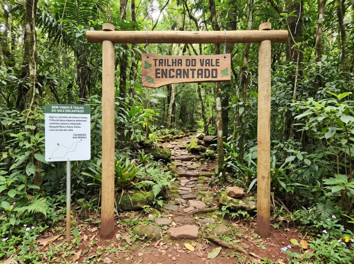
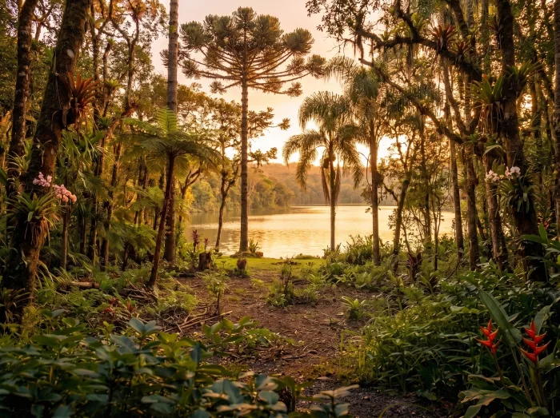

A mesma terra, duas decisões
A sua área já tem tudo que precisa. O que muda é o que você coloca nela.
Arraste a alça de cada imagem para ver a mesma paisagem antes e depois de uma estrutura simples.
✗
Terra parada
versus
✓
Terra que recebe visitante
Trilha


AntesDepois⇔
Arraste pros lados para comparar
Mirante

 AntesDepois
AntesDepois
⇔
Arraste pros lados para comparar
Cabana
 AntesDepois
AntesDepois
⇔
Arraste pros lados para comparar
Deck na cachoeira

 AntesDepois
AntesDepois
⇔
Arraste pros lados para comparar
Camping

 AntesDepois
AntesDepois
⇔
Arraste pros lados para comparar
Ilustrações de exemplo. Não são fotos reais de uma propriedade específica.